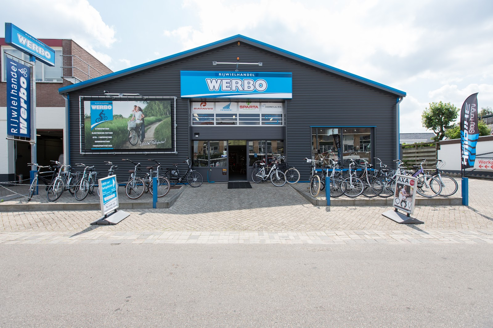
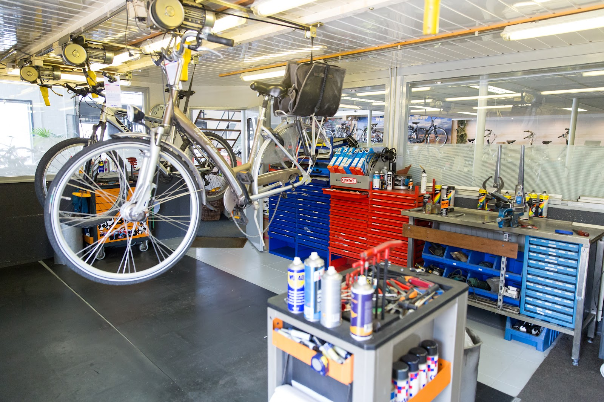
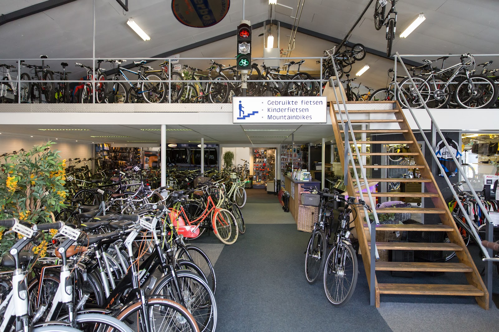
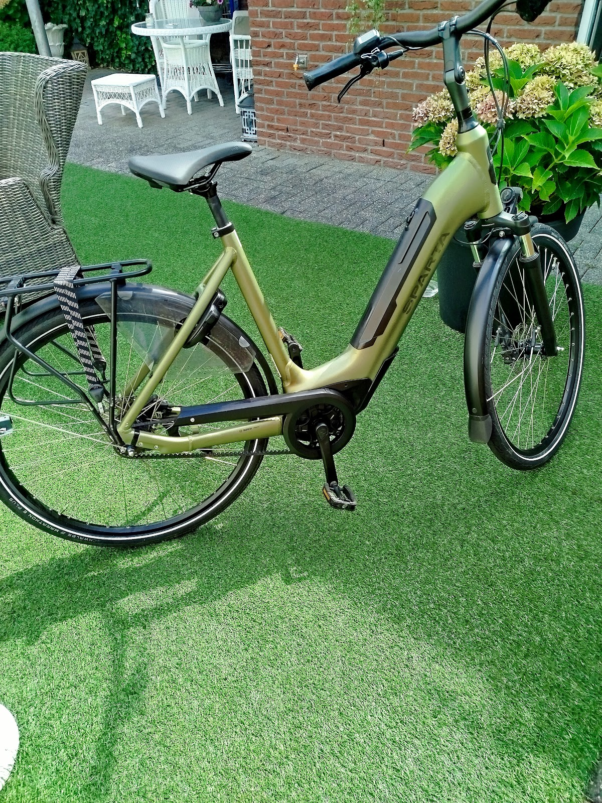
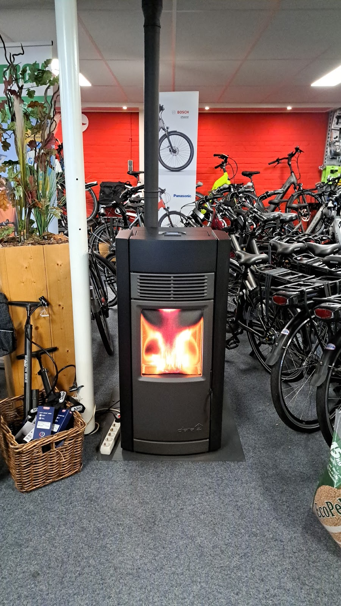

Waterloweg 63, Ede
Dé fietsspecialist van Ede
Nieuwe en gebruikte fietsen en e-bikes in een showroom van ruim 1000 m². Met een eigen werkplaats die uw fiets binnen één werkdag repareert.
Dinsdag t/m vrijdag 9:00 tot 17:30, zaterdag 9:00 tot 16:00. Zondag en maandag gesloten.
Fiets kapot? Morgen weer rijden.
In onze eigen werkplaats repareren we uw fiets of e-bike binnen één werkdag. Zolang hij bij ons staat, rijdt u op een leenfiets. Duurt het onverhoopt langer, dan hoort u dat direct van ons.
Vakkundig advies, eerlijk werk en een scherpe prijs. Uw fiets is bij ons in goede handen.
Reparatie afspreken: 0318 500 088
1000 m² fietsplezier
Kom gerust kijken. Beneden de nieuwe fietsen en e-bikes van de bekende merken, boven de rest. Alles rustig naast elkaar, zodat u goed kunt vergelijken.

Beneden
- Nieuwe stadsfietsen
- Elektrische fietsen
- Fietsaccessoires
Boven, de trap op
- Gebruikte fietsen, nagelopen door onze monteurs
- Kinderfietsen
- Mountainbikes
Merken o.a. Batavus, Sparta, Gazelle, Hercules, Trenergy, Velo de Ville, Alpina en Loekie.

Gespecialiseerd in e-bikes
Naast een groot aanbod gewone fietsen staan er bij ons veel e-bikes klaar om te proberen: van Sparta en Batavus tot Trenergy en Velo de Ville. We vragen wat u ermee gaat doen en wat uw budget is, en zoeken daar de juiste fiets bij.
Liever iets voordeliger? Ook onze gebruikte fietsen zijn volledig nagelopen in de eigen werkplaats.
"Hij vroeg wat ik zocht, en gaf hem aan wat mijn plusminus budget was.. werd prefect geholpen..ben nu de eigenaar van een goede fiets"
U kunt bij ons ook terecht voor
- Bedrijfsfietsplan
- Fiets via uw werkgever? Wij regelen het voor u, snel en duidelijk.
- Fietsverzekering
- Uw nieuwe fiets of e-bike goed verzekerd.
- Sleutelservice
- Sleutel kwijt of een reservesleutel nodig? Loop even binnen.
Eerlijk advies, niets aangesmeerd
4,7 uit 136 reviews op Google
"Ik heb een fiets bij Werbo gekocht via het fietsplan van mijn werk. Het regelen daarvan ging snel, heel vriendelijke man met goed advies, er werden geen accessoires aangesmeerd. Alles was gewoon duidelijk en goed en snel geregeld. Top!"
"Een vertrouwd adres met geweldige service! We zijn super blij met onze nieuwe fietsen. Mart en Koen, nogmaals bedankt!"
"Super blij met de fiets , vriendelijk geholpen"
"Nu Ede het moet doen zonder de luxe en degelijkheid van Maxstein kan bij Werbo goed terecht voor degelijkheid en eerlijk advies. De winkel is kleiner, maar heeft wel de nieuwste fietsen van de meest gangbare merken staan. Daarnaast verkopen ze ook 2de hands fietsen. De verkoper is vriendelijk, attent en is pas tevrede"

De koffie staat altijd klaar
Loop gerust binnen aan de Waterloweg voor een eerlijk en betrouwbaar advies. Wij hopen u snel te zien in de showroom.
Openingstijden
| Maandag | Gesloten |
| Dinsdag | 9:00 tot 17:30 |
| Woensdag | 9:00 tot 17:30 |
| Donderdag | 9:00 tot 17:30 |
| Vrijdag | 9:00 tot 17:30 |
| Zaterdag | 9:00 tot 16:00 |
| Zondag | Gesloten |